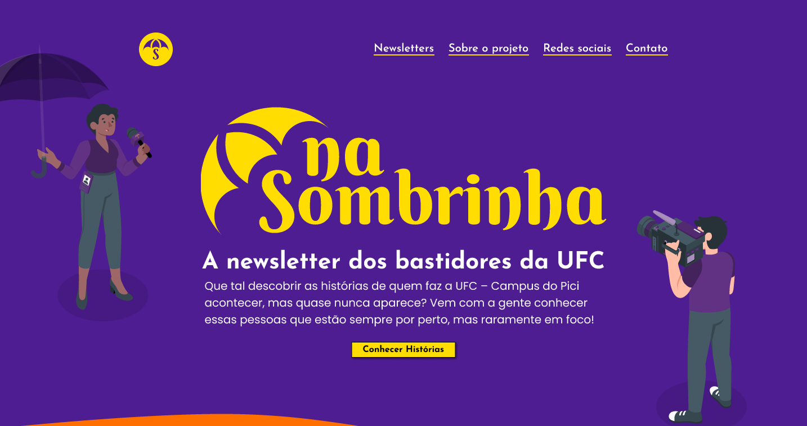
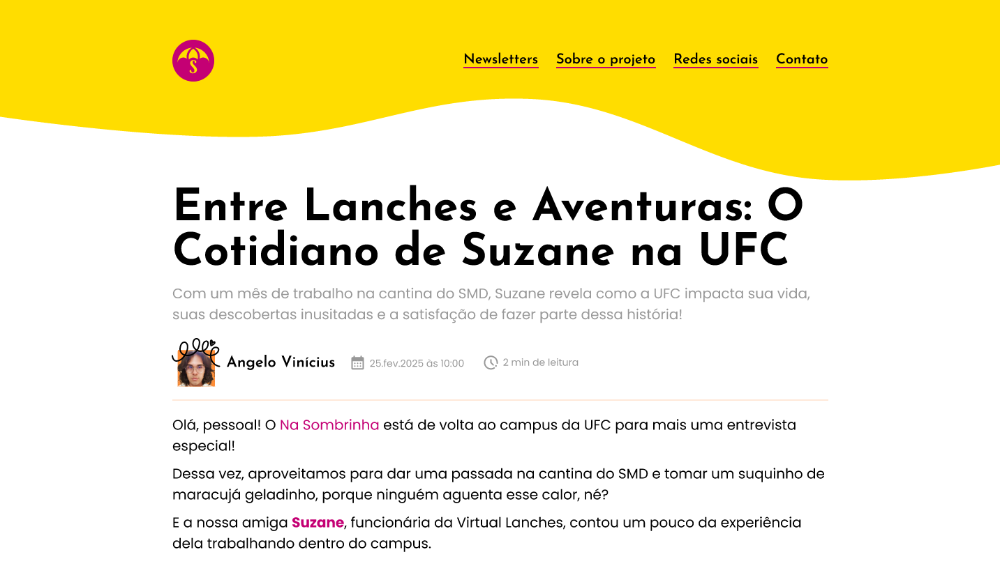

A multimedia project aimed at recognizing and giving visibility to the often-overlooked workers of the Federal University of Ceará
This project was developed as a multiplatform and multimedia service aimed at giving visibility to the often-overlooked workers of the Federal University of Ceará. The strategy was divided into three main fronts: short videos for Instagram and TikTok, informational posts on Instagram, and a newsletter presented in the form of a website.
I contributed to the project by producing the audio for the short videos and directing some of them. I also participated in the ideation process, helping to develop the concept and creative direction.